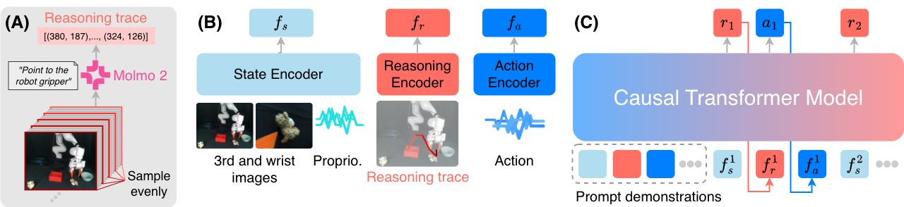

Tomato to Grey Bowl
ICRT
Ours
In-context imitation learning enables robots to adapt to new tasks from a small number of demonstrations without additional parameter updates, but existing approaches typically condition only on state–action trajectories and lack explicit representations of task intent. This limitation hinders performance in complex and ambiguous task settings where the same actions may be consistent with different task intents. We present In-Context Imitation Learning with Visual Reasoning (ICLR), a framework that augments demonstration prompts with structured visual reasoning traces representing anticipated future robot trajectories in image space. Our method jointly learns to generate reasoning traces and low-level actions within a unified autoregressive transformer, enabling the model to mimic not only action prediction but also the reasoning process that leads to those actions. We extensively evaluate ICLR in both simulation and real-world manipulation tasks and demonstrate consistent improvements in success rates and generalization to unseen tasks and novel object configurations compared to other in-context imitation learning methods. These results suggest that incorporating embodied visual reasoning represents a promising direction for enhancing the robustness and generalization of robotic in-context learning systems.

All rollouts are shown at 1X speed.